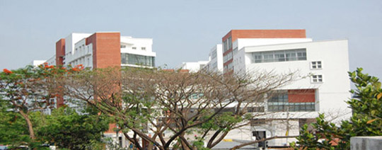

About Aust
Accreditation

The Academic programs of the University are recognized by many national and international educational institutions and professional bodies such as: -
- UGC (University Grants Commission , Bangladesh)
- UGC (University Grants Commission , Bangladesh)
- UGC (University Grants Commission , Bangladesh)
- UGC (University Grants Commission , Bangladesh)
- UGC (University Grants Commission , Bangladesh)
- UGC (University Grants Commission , Bangladesh)
- UGC (University Grants Commission , Bangladesh)
A number of memorandums of understanding have been signed between this University and
So that the students of this university may have the opportunity of graduate and/or under graduate study with appropriate credit transfer.
Similar arrangements are under process with Dublin City University, Ireland, University of Bradford and other universities of USA, Australia, UK, Ireland, Canada and South Korea.
Aust Ranking
Ahsanullah University of Science and Technology, Dhaka, ranks:
- 1st in all Private Universities of Bangladesh
- 3rd in all Universities of Bangladesh
- 77th in the Indian Subcontinent
- 7084th in the world
Source : Cybermetrics Lab (January 2008). Regional and Global Ranking of Indian subcontinent universities. CINDOC-CSIC, Madrid, Spain.